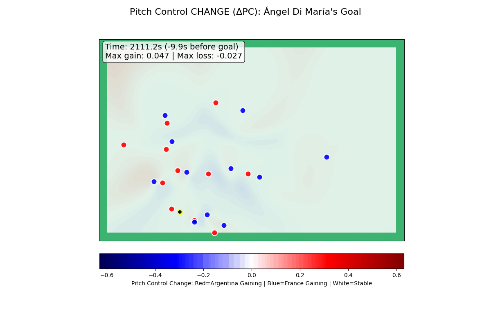
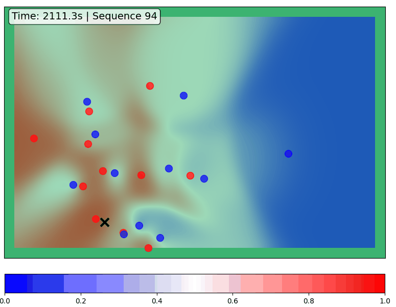

WC 01 / REAL MATCH / SUPPLIED RENDERED EVIDENCE
Ángel Di María’s World Cup final goal
Argentina v France · 18 December 2022 · official goal minute 36 · Argentina #11
Real-match visualizations supplied by Basel. The complete supplied rendered animations and sequence 94 video are available; underlying tracking is not. These values are read from the plot annotations and are not newly calculated movement metrics.
FULL SUPPLIED VISUALIZATIONS
Basel’s rendered sequence
These are the supplied model visualizations, not a reconstruction from new tracking. The source plot clock is not synchronized with StatsBomb’s event clock.
Pitch control change animation

Pitch control surface animation

Player influence ranking video from sequence 94
In inspected source frame 31 at source time 2117.4 s, shirt 11 leads the displayed ranking. Units and the exact source aggregation are not independently supplied; no bar is converted to a new m² value.
INDEPENDENT EVENT CONTEXT / STATSBOMB
What the recorded attack adds
0.3034 shot xG · 5 completed passes · 9.757 s from first recorded pass to shot
Nahuel Molina → Alexis Mac Allister → Lionel Messi → Julián Álvarez → Alexis Mac Allister → Ángel Di María
The xG belongs to the shot and is provider model context. It is not Di María’s off-ball run credit. Event coordinates are not continuous tracking. The source clock 00:35:22.647 is not aligned to the supplied plot clock.

Derived analysis and source identifiers · Provider terms
Three annotated checkpoints from the full supplied animation above. Original plot labels are preserved. Evidence table
| Source clock | Goal marker offset | Max gain | Max loss |
|---|
| 2111.2 s | -9.9 s | +0.047 | -0.027 |
| 2117.2 s | -3.9 s | +0.314 | -0.185 |
| 2123.1 s | +2.0 s | +0.209 | -0.145 |
The plot’s clock/goal marker is not independently synchronized with the broadcast. The after-goal frame is context only. No player-dot mapping or source tracking rate is inferred.
Exact evidence and checksums · Official FIFA match context
Single upload video
Download MP4 · Download picture
Silent explainer using the full supplied animation and attributed event analysis. Raw movement metrics remain unavailable for this case.The tactical story
The attributed passing chain is Molina → Mac Allister → Messi → Álvarez → Mac Allister → Di María. The recorded sequence contains five completed passes in 9.757 seconds before the shot.
Raw defender tracks and dot identities are unavailable for this case. The supplied animations are preserved; new identity-specific attraction/cover arrows are not invented. The Liverpool cases provide observed path overlays and rule-based candidate explanations.